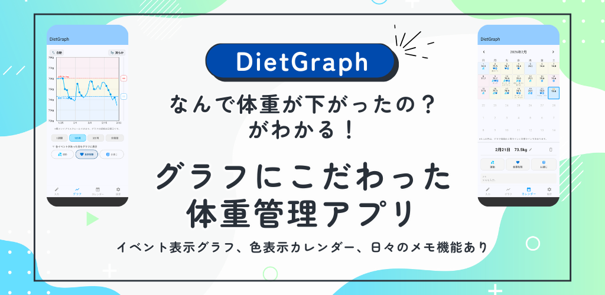
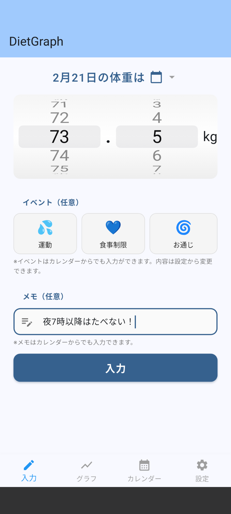
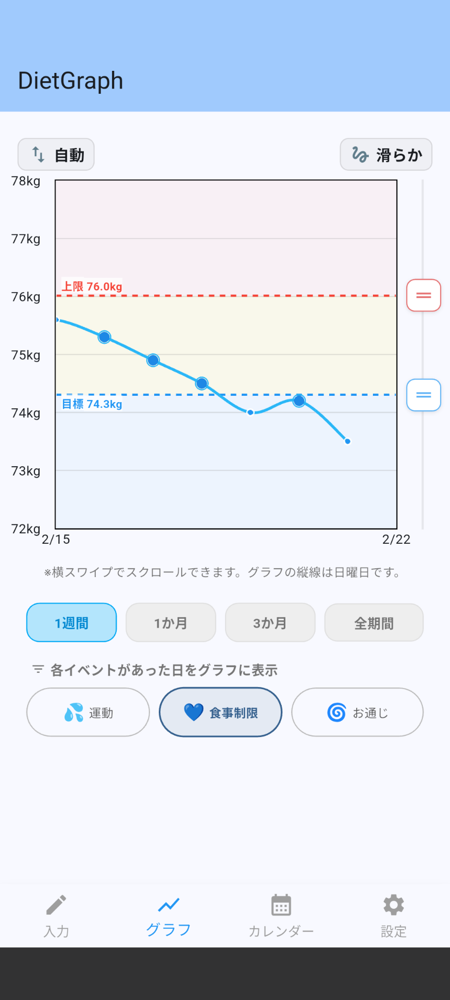
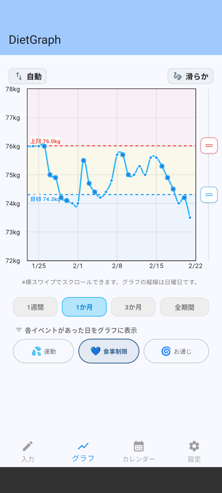
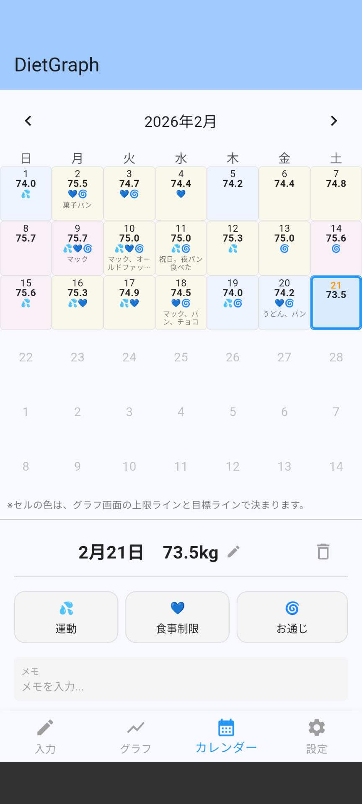
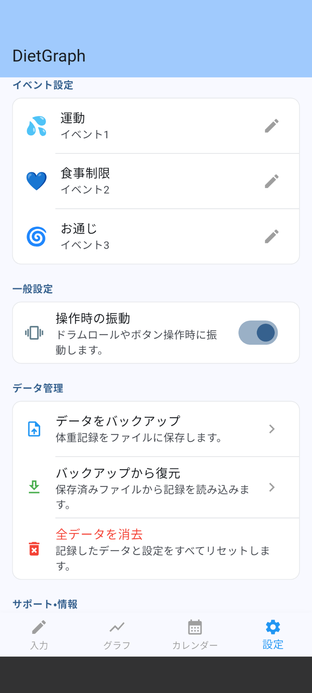

📖 使い方ガイド

DietGraph の主な機能
体重の記録方法
1
体重を入力
下部メニューの「入力」タブを開き、ドラムロール（スクロール）で今日の体重を選択して「入力」ボタンを押してください。

▲ 入力画面
2
イベントを記録
食事・運動制限・お通じのイベントをタップして記録できます。
イベントを記録すると、グラフ上にも表示することができ、体重増減の原因が分かりやすくなります。
イベントの内容やアイコンは、設定から変更することができます。
3
メモを残す
その日に食べた物や達成できたことなどをメモとして残すことができます。
このメモはカレンダーで表示されます。カレンダーから変更することもできます。
グラフで推移を確認
記録したデータは自動的にグラフ化されます。
- ズーム： （1週間）（1カ月）（3カ月）（全期間）のボタンで表示する範囲を切り替えます。
- 表示期間の移動： グラフを横にスワイプして表示期間を動かします。
- 上限・目標体重の変更： 上限・目標と書かれた点線の右の四角いアイコンをドラッグして値を変更します。
- 縦軸の範囲の固定/自動： グラフ左上のボタンで「自動／固定」に切り替えます。
- グラフ線の直線/滑らか： グラフ右上のボタンで「滑らか／直線」に切り替えます。
- イベントの表示/非表示： グラフ下のイベントのアイコンのボタンで「表示／非表示」に切り替えます。

▲ グラフ画面（1週間で、食事制限のイベント表示）

▲ グラフ画面（3カ月で、食事制限のイベント表示）
カレンダー機能
カレンダー画面では、月ごとの記録状況を確認できます。
- 日付の背景色で体重の状態が分かります（赤：上限超え、青：目標達成、黄：その間）
- 日付をタップするとその日の記録を、下の情報表示パネルから修正できます。
- イベントやメモが表示され、体重の増減の原因や傾向を振り返るのに便利です。

▲ カレンダー画面
⚙️ データ管理と設定
設定画面では、イベントの設定や、振動設定、データ管理ができます。
- 広告の非表示 広告の非表示ができます。
- イベント設定 イベントのアイコンやラベルを変更できます。
- 一般設定 ボタンを押したときの振動の有無を変更できます。
- データ管理 データのバックアップと復元、データの消去ができます。

▲ 設定画面
Pro版（有料機能）について
Pro版でできること
- 広告の完全非表示
- データのバックアップ（CSV書き出し）
- バックアップからの復元（CSV読み込み）
「設定」画面→「広告を消す」からアップグレードできます。買い切り型で永久に使えます。
機種変更時のデータ移行
- 旧端末で「設定」→「データをバックアップ」を選択し、CSVファイルを保存します。
- CSVファイルを新端末に移動します（Google Drive・メール等を利用）。
- 新端末でアプリを起動し、「設定」→「バックアップから復元」からCSVを読み込みます。
💡 注意
インポート機能を使用すると、現在のデータは上書きされます。大切なデータは事前にバックアップしてください。